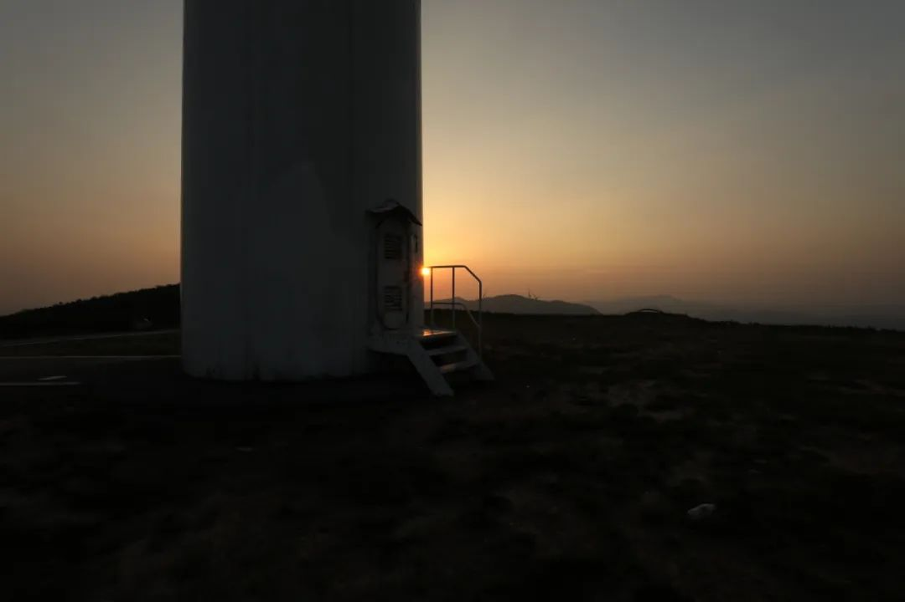

答辩完一周了，没有想象中的放松和平静。要完成的手续和所有的ending，那感觉就像是大一二三四所有fighting过的事情又重新找上门来。
上周去了一趟长沙天主堂。因为城北堂基督堂没有开，所以在湘春路上的天主堂等朋友过来。前很久在潮宗街教堂的时候我还弄不明白天主堂和基督堂的区别。这次也只是有了一个过眼的印象。最近看的书是陀思妥耶夫斯基的《卡拉马佐夫兄弟》，看不完的书里也有神父作为其中的一条线穿来过去。
朋友带着海鸥相机过来。在拍钟楼的时候不知道被长沙这个天气的蚊子咬了多少包。



看了一下湖南美术馆的展览。艺术审美本来就是很私人的东西，反映的是一个人各种兴趣的取向。这一次的展览，我认为是比较平淡的。我能看出作者和策展都有在努力建设一个比较完备的体系。但作品没有灵气就是没有灵气。

我能直白地说，这次展览里最开心的是在艺术展看到了桥面荷载的计算。这是建筑设计和安全衡算的结合。没有情绪的作品里，吸引我倒不如看看这些工程上的东西。
以前我一杯奶茶钱，可以快乐一整年。压力和年龄一起增长。昨天七个会，前天五个会，今天三个会。开完会再记录、策划、交接、布置，做不完的事情让我想每天住在奶茶店做这些事情。在茶颜悦色搞了个杯子。因为离家很近的地方开了家新店。环保起见，有时候就没有用纸杯。最好看的那张已经成了我在一个地方的头像。
底下是最近的几条memo，拍的图基本在上边了，底下很多是我自己在note
一家比较不行的探店体验。自那一篇长沙人是检验臭豆腐的唯一标准之后，湘菜店我林林总总也测评了很多。一家店面的体验，广告和口碑是吸引我去进门的操作，进门之后评的是店内装潢、迎客和其他食客的模样，再是吃的时候传菜和主要体验，最后是结账什么的。当然我不会直接拿一张评分表来一个一个对，逐项地打勾当然是不可能。不管怎么探店，都是一个连贯的体验而不会那么单一。还是来说这一家吴记，疫情之前我从都正街出来，去跑过旁边的那家夏记粉店，当时根本没有留心到这家。我给的猜测是老板把经营包给了别人。在湘菜店里遇到迎客的人用普通话对我做营销“我们这家是正宗长沙口味很多本地回头客的”，这种营销于我而言就没有任何信度毕竟我能尝出来的就知道应该怎么给个归属。吃味其实还行，整个店面就四个菜也只做这四个菜。物料应该也是一直把握了的，所以我说是原来的老板把店给另一个人承包去了。像是换了堂主的隘口，敬香的人发现这个堂主一点都不利索。我倒不是说，其他人做湘菜的味道就不行，但是在这一点上就会格外地有画地为牢的意思。我希望至少从食味上来说，你是对这样的环境有着打小的味蕾记忆。我知道我去外地的湘菜馆，进门如果真的要用我的味蕾来挑剔的话，没有几家店能经得住我几下挑。所以也没必要。有些事情就是小事。换另外一个我很熟悉的——日料定食来说。如果走进哪家日料店，服务生首先过来给你的杯子里倒一杯水，这杯水如果是常温/或者热的，那这家店从一开始就不怎么样。这是一种显性的约定。大意是因为在日料文化当中，人们认为热水是不干净的水。所以在进日料店之后，店员拿过来的一定是一杯冰水。干不干净当然是扯淡。就好像人们说隔夜茶不能喝一样。我随便做个思想逻辑实验就能推翻这种不靠谱的结论：早上八点泡的茶晚上八点还能喝，那为什么晚上八点泡的茶第二天早上八点就不能喝了呢。茶叶也会在晚上尿床吗？这其实就是人们习惯的一种约定。这样的约定有的有溯及能力，有的没有。有的有显性的心理根源，有的没有。有的从发展脉络上看，已经和最早的模样相距很远，但依然不妨碍这种约定成了某一个圈子里的人相互辨识。相距最远的莫过于遗留下来的地名，就像长沙城墙老九门现在带门的地名已经没有几个。不扯开了。
上学期在武汉一盏灯，大堂经理来传菜的时候我用长沙话答了一句“累了您那家”，经理就开始一本正经地严肃起来和我说说这边的菜品哪些怎么样、哪些菜品会和在长沙味道不一样。最后邀请点评一下这边店里，什么方面的都可以。
总是会被认为好像对探店食味很懂。我自己也接下了这个身份。好多次在店里被其他人指指点点，其他顾客用我能听到的音量对服务生说：“他点的什么？麻烦按照他点的那个给我来一份。”这个段子也被我提到好多次了。这是因为我没法在老梗和新事物里边找到一个平衡点。隐性的思维逻辑和生活态度要改变起来很难，但是每天遇到的不一样生活还是真的很不一样。于是我对别人的好意是不会拒绝的。希望能记得住才还得回去。还不回去的也会成为链条在其他地方传播开来。
下周我想出一组没有聚焦好的图。名字我都想好了，叫乱七八焦
我對事認真的態度，可以超過大部分人。我認真起來甚至可以在熙熙攘攘的馬路邊，放一張小桌子再點一盞檯燈，給人貼鋼化膜
吉野家的店主是不是睡不醒。我去这家店三次了，每次和我说话都像是含着一口很重的哈欠。是很困吗？是不是别人看到的都是一个口罩，其实自己偷偷塞了五个棒棒糖不要棒棒
就是不管身份證告訴我幾歲。我都有辦法決定我今天的心理年齡。
五个一、转入高职的提案和驱逐行为。留学圈利益相关，实在是不甚太平。
急！我是國內的大四學生但是國外正在給我分edu郵箱了 回來還是夢想進新東方可是一定要GRE335+ TOEFL115+ IELTS8.0+ 刷不到這麼高的分怎麼辦啊嗚嗚嗚最近的考位也不好約家裡也沒錢讓我考我好菜啊回头看见冷楠五月份在家考了两个170，帮他在朋友圈水了一波。其实也不是帮，就是自来书了。有些critical thinking和策略是在厉害
所谓的夜生活可以去酒吧喝酒，可以去迪厅蹦迪。但和喜欢的人在一起，做一些简单的事情。也可以都沒有。
这是一次在万家丽高架上做的士的经历。空气尚好，所有的窗户开到最大。司机不需要导航，夜晚的灯光和合适温度的风。我坐在离司机最远的后排位置。高架上不需要等红绿灯，霓虹的感觉像在车厢里弹奏着乐曲。耳机里听得是勃艮第红，是听得最多的那一首